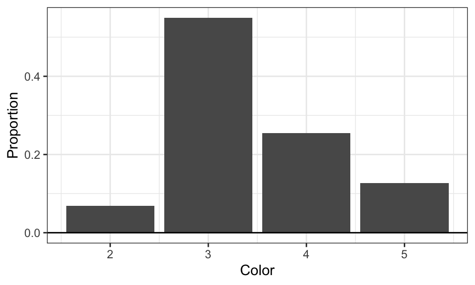
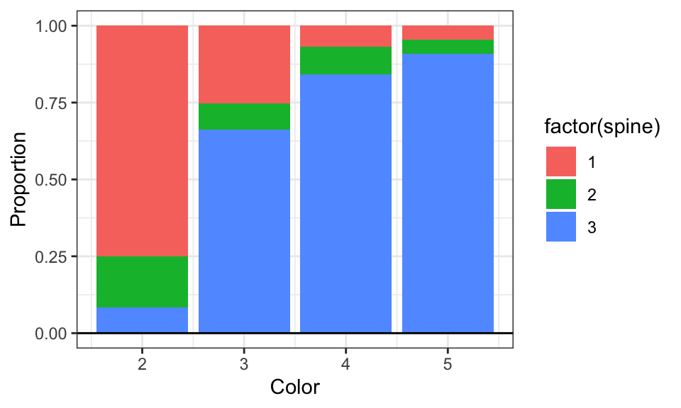
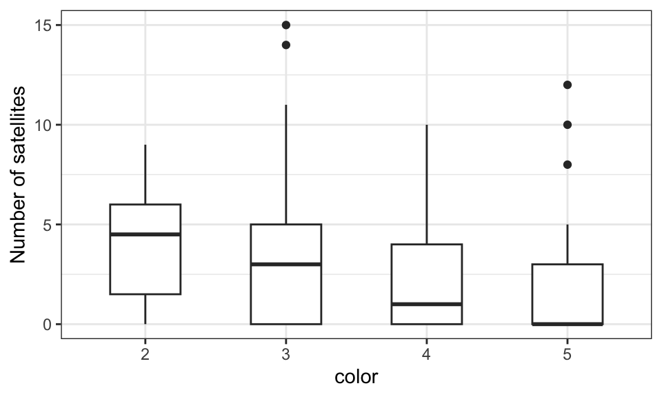
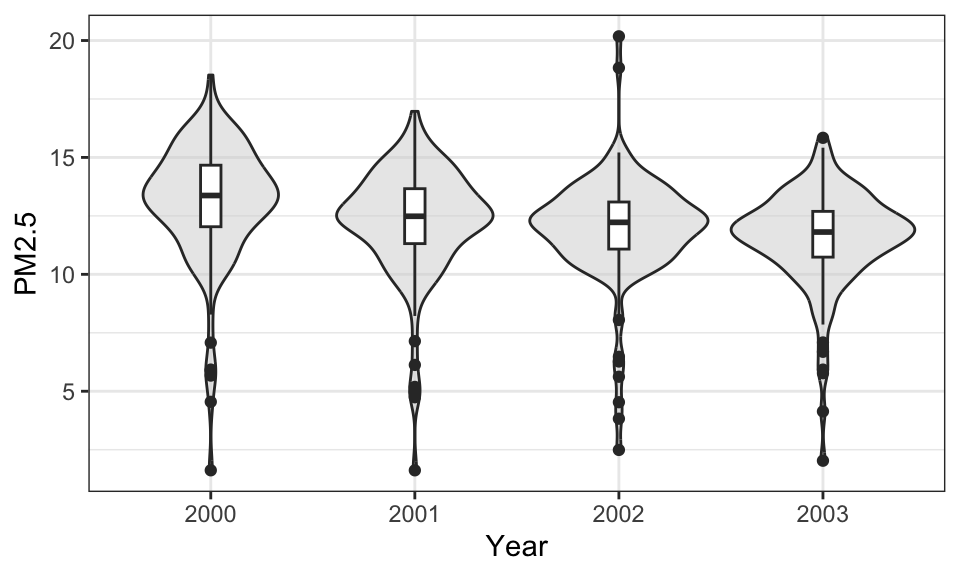

Tidyverse and ggplot Review
1 Data Cleaning
1.1 Summarizing important Operator in Tidyverse
tibble(), constructs a tibble, an enhanced data frame
read_csv(), like read.csv, but quicker and returns a tibble
mutate(), used to create new variables or edit old variables
filter(), select rows that satisfy provided condition(s)
group_by(), for specifying a group variable for data operations
|> pipes, takes the result on the left and passes it as the first argument to the function on the right.
select(), select one or more columns as a data frame
case_when(), create a new variable by assigning different values based on multiple conditions.
summarise(), allows us to ask for statistics calculated on selected column(s)
mean()sd()min()quantile()median()max()IQR()e1071::skewness()e1071::kurtosis()
2 Categorical Data
Categorical variable places observations into one of several groups or categories.
Nominal: assumes groups are made up of named categories.
Ordinal: assumes groups are made up of ordered categories
2.1 Numerical Summary
We want to compute the sample proportion of observations that belong to each level of the categorical variable.
\[\hat{p} = \frac{x}{n}\]
x is the count of observations in the specified level
n is the count of observations in total
2.2 Graphical Summary
One Categorical Variable
Bar plot:
geom_bar()Pie chart:
geom_bar()+coord_polar("y", start=0)Doughnut Plot:
geom_bar()+coord_polar("y", start=0)+xlim(0.5, 2.5)
Two Categorical Variable
Grouped bar plot:
geom_bar()+facet_wrap()orgeom_bar(...fill = )Grouped pie chart:
geom_bar()+coord_polar("y", start=0)+facet_wrap()
3 Example of Summarizing Categorical and Continuous Data
Brockmann (1996) collected data on the mating behavior of nesting female horseshoe crabs, and their research question is what attributes of a female horseshoe crab lead to having more satellites.
If we want to know the distribution of crab color in the data, we could create a summary table and a bar plot.
| color | n | Proportion |
|---|---|---|
| 2 | 12 | 0.07 |
| 3 | 95 | 0.55 |
| 4 | 44 | 0.25 |
| 5 | 22 | 0.13 |
Code

We can also summarize data of the spine condition of each color of the crabs.
| color | spine | n | prop |
|---|---|---|---|
| 2 | 1 | 9 | 0.75 |
| 2 | 2 | 2 | 0.17 |
| 2 | 3 | 1 | 0.08 |
| 3 | 1 | 24 | 0.25 |
| 3 | 2 | 8 | 0.08 |
| 3 | 3 | 63 | 0.66 |
| 4 | 1 | 3 | 0.07 |
| 4 | 2 | 4 | 0.09 |
| 4 | 3 | 37 | 0.84 |
| 5 | 1 | 1 | 0.05 |
| 5 | 2 | 1 | 0.05 |
| 5 | 3 | 20 | 0.91 |
Code

To answer the research question, we can create a grouped box plot and comparing how does difference in color contributes to the difference in number of satellites.
| color | Mean | SD | Median | IQR | Skewness | Excess Kurtosis |
|---|---|---|---|---|---|---|
| 2 | 4.08 | 3.12 | 4.5 | 4.5 | -0.04 | -1.49 |
| 3 | 3.29 | 3.21 | 3.0 | 5.0 | 1.11 | 1.48 |
| 4 | 2.23 | 2.60 | 1.0 | 4.0 | 1.12 | 0.66 |
| 5 | 2.05 | 3.62 | 0.0 | 3.0 | 1.54 | 1.09 |
Code

Color number 1-5 represent from light to dark, and the statistic and graph seem to suggests that crabs with lighter color tend to have higher number of satellites, although there are also some outliers in darker color crabs.
4 Quantitative Data
4.1 Numerical Summary
- Mean:
\[ \bar{x} = \frac{x_1 + x_2 + \cdots + x_n}{n} = \frac{\sum_{i=1}^n x_i}{n} \]
- Sample Variance:
\[ s^2 = \frac{\sum_{i=1}^{n} (x_i - \bar{x})^2}{n - 1} \]
- Sample standard deviation:
\[ s = \sqrt{\frac{\sum_{i=1}^{n} (x_i - \bar{x})^2}{n - 1}} \]
Median:
- The median is the observation in the middle of the data when placed in ascending order.
Interquatile Range:
The first quartile \(Q_1\) is the median of the lower half of the observations, making it the 25th percentile.
The third quartile \(Q_3\) is the median of the upper half, making it the 75th percentile.
\[ IQR = Q_3 - Q_1 \]
Skewness
When skewness < 0, there are more observations for high values and fewer with low values.
When skewness = 0, the data are symmetric – this means that the data are symmetrically distributed around the mean.
When skewness > 0, there are more observations for low values and fewer with high values.
Excess Kurtosis
The excess kurtosis describes how peaked data are in relation to the Gaussian distribution (the bell-shaped curve) with the same mean and variance.
When excess kurtosis < 0, the data are platykurtic – the data have a flatter peak and exhibit more variability.
When excess kurtosis = 0, the data are mesokurtic – the data have a peak and tails similar to the Gaussian distribution.
When excess kurtosis > 0, the data are leptokurtic – the data have a more pronounced peak and exhibit less variability.
4.2 Graphical Summary
One continuous variable
Histogram:
geom_histogram()Violin Plot:
geom_violin()Box Plot:
geom_boxplot()
Two continuous variable
- Scatter Plot:
geom_point()+geom_smooth()
5 Example of Data Cleaning and Summarizing Quantitative Data
In my econometric class, I conduct a research project that studied how does the changes in petroleum price affects PM2.5 levels in the air. I used R to conduct lots of data cleaning and summarizing process, and I think those data serve as a good example of reviewing concepts about tidyverse and ggplot.
PM2.5 refers to airborne particulate matter with a diameter of 2.5 micrometers or smaller. These fine particles can penetrate deep into the lungs and even enter the bloodstream, posing significant risks to respiratory and cardiovascular health.
In theory, a higher petroleum price will decrease consumption and thus decrease pollutants such as PM2.5 in the air. However, whether this causal relationship applies to reality and the extent of this impact remains uncertain.
I obtain data of PM2.5 level from the United States Environmental Protection Agency (U.S. Environmental Protection Agency 2026) and petroleum price data from U.S. Energy Information Administration (U.S. Energy Information Administration 2026)
5.1 Loading the Data
We can use read.csv() to read csv.files
For example, I have data of average air pollutants in the air by county in 2000 from the EPA(cite).
5.2 Selecting columns
We can use data$column to select column of the data.
If we are only need information about the county code, state name, parameter name, and arithmetic mean, we can use select() to select multiple columns. We can use head() to check the head of the data
Code
County.Code State.Name Parameter.Name Arithmetic.Mean
1 3 Alabama Ozone 0.061870
2 3 Alabama Ozone 0.054953
3 3 Alabama Ozone 0.054953
4 3 Alabama Ozone 0.054835
5 3 Alabama Sample Flow Rate- CV 0.288660
6 3 Alabama Sample Volume 23.9855675.3 Filtering Data
Since we only want the data of PM2.5, we can use filter() to exclude any other parameter.
We also want to only include observations within the U.S.
We can also use filter() to drop NAs. is.na() will return whether the value the NA.
County.Code State.Name Parameter.Name Arithmetic.Mean
1 3 Alabama PM2.5 - Local Conditions 14.83412
2 3 Alabama PM2.5 - Local Conditions 14.83412
3 3 Alabama PM2.5 - Local Conditions 14.83412
4 3 Alabama PM2.5 - Local Conditions 14.83412
5 3 Alabama PM2.5 - Local Conditions 14.83412
6 3 Alabama PM2.5 - Local Conditions 14.834125.4 Mutate
Each county has lots of different measurement of the arithmetic mean, and I want to add a new column that contain the average level of PM2.5 of that county. We can use group_by() and mutate() to accomplish this task. If the data still contain empty value, we need to set na.rm = TRUE so that we do not get empty values.
Code
County.Code State.Name Parameter.Name Arithmetic.Mean pm25_avg
1 3 Alabama PM2.5 - Local Conditions 14.83412 11.93812
2 3 Alabama PM2.5 - Local Conditions 14.83412 11.93812
3 3 Alabama PM2.5 - Local Conditions 14.83412 11.93812
4 3 Alabama PM2.5 - Local Conditions 14.83412 11.93812
5 3 Alabama PM2.5 - Local Conditions 14.83412 11.93812
6 3 Alabama PM2.5 - Local Conditions 14.83412 11.938125.5 Numerical Summary
We can use summarize() to create a summary table. Here I will use the fully clean version of data that contain information of year, petroleum price, PM2.5 level, state name, and county code.
year Petroleum.Price State.Name County.Code PM2.5 Natural.Gas.Price
1 2000 8.54 Alaska 20 5.670303 1.97
2 2000 8.54 Alaska 68 1.619042 1.97
3 2000 8.54 Alaska 90 14.447360 1.97
4 2000 8.54 Alaska 110 5.926137 1.97
5 2000 8.54 Alaska 130 5.885000 1.97
6 2000 8.54 Alaska 170 4.547621 1.97
Coal.Price log_pm25 log_ptroleum
1 1.87 1.7352426 2.144761
2 1.87 0.4818348 2.144761
3 1.87 2.6705117 2.144761
4 1.87 1.7793726 2.144761
5 1.87 1.7724067 2.144761
6 1.87 1.5146043 2.144761| Mean | SD | Median | IQR | Skewness | Excess Kurtosis |
|---|---|---|---|---|---|
| 9.81 | 2.49 | 9.49 | 3.46 | 0.64 | 4.03 |
Since the data contain information of PM2.5 in each year, we can create summary table that is grouped by year.
Code
| year | Mean | SD | Median | IQR | Skewness | Excess Kurtosis |
|---|---|---|---|---|---|---|
| 2000 | 13.10 | 2.56 | 13.37 | 2.63 | -1.39 | 3.55 |
| 2001 | 12.27 | 2.32 | 12.48 | 2.35 | -1.47 | 3.94 |
| 2002 | 11.96 | 2.25 | 12.22 | 2.01 | -0.94 | 4.98 |
| 2003 | 11.55 | 2.06 | 11.81 | 1.96 | -1.42 | 3.97 |
5.6 Graphical Summary
We can create box plot or violin plot to graphical illustrates the distribution of average PM2.5 in each year.
Code

We can create a scatter plot to see if there is a correlation between petroleum price and PM2.5 level.
Code

The estimate coefficient is biased here because I did not add any control variable and time state fixed effect in this model. However, this still serve as an example of how we summary two continuous variable data.
| Pearson | Spearman | Kendall |
|---|---|---|
| -0.43 | -0.41 | -0.28 |